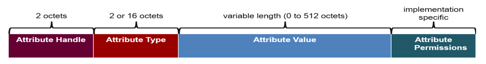
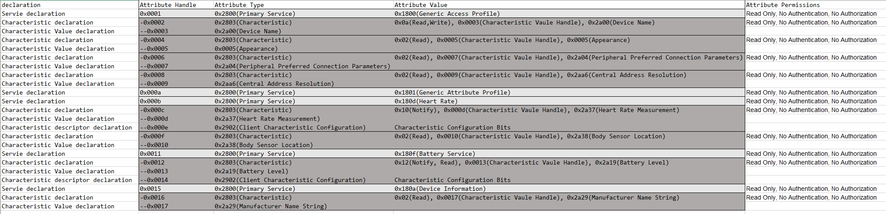
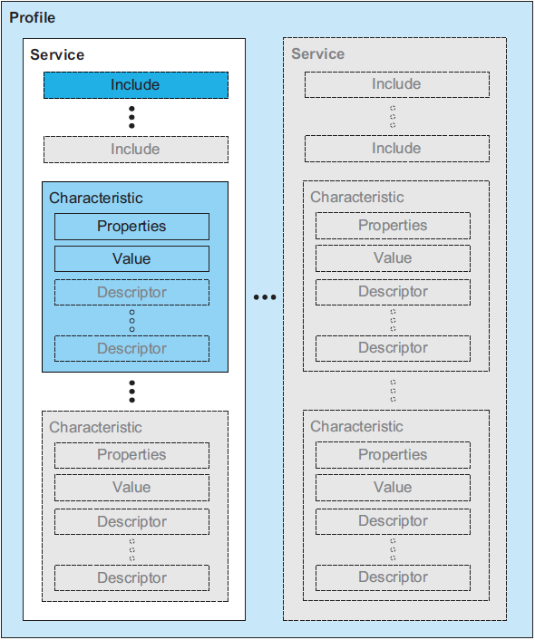
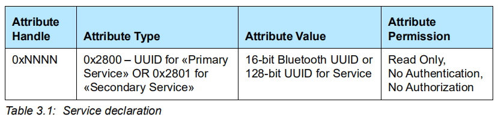
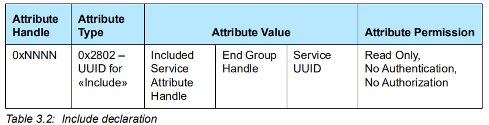
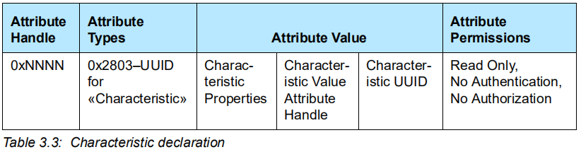
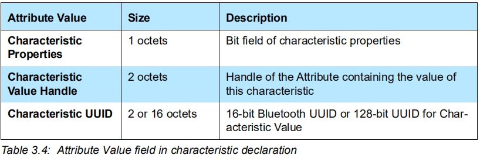
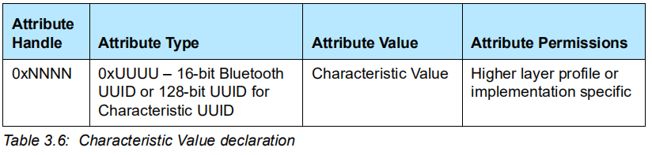
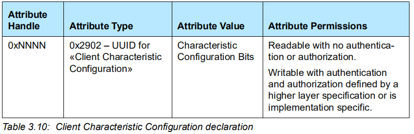
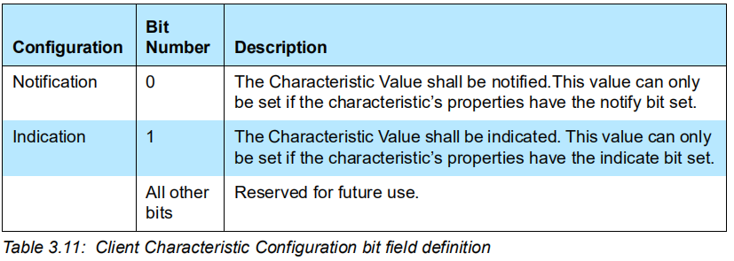

3. GATT Service 定义总结
最近跑了很多关于 GATT Service 的 demo，对于相关概念有了一定的印象。
为了更深入的学习，我系统的学习了 Core Spec 5.2 里
Vol 3: Host -> Part G: Generic Attribute Profile (GATT) -> 3 Service interoperability requirements
里的相关内容，对于 Service definition，Include definiton 和 Characteristic definition 有了更深刻的认识，在这里记录下我的理解，我会结合一张 Heart Rate Server 里的 attribute 表来介绍。
3.1. ATT 基础回顾
ATT(Attribute Protocol) ，属性协议，定义了属性 attribute 的格式，众多的 attributes 组合成了一个数据库，蓝牙设备通过这个数据库对外提供服务。

由此可以看出一个 attribute 是由
Attribute Handle：访问该 attribute 的句柄。
Attribute Type
Attribute Value
Attribute Permissions：访问该 attribute 的权限。
组成。该 attribute 代表什么含义由 GATT(Generic Attribute Profile) 定义。
3.2. Heart Rate Attribute Table
这是一张 Heart Rate Server 里存储的 attribute 表，下面的分析会结合这张表。

3.3. GATT 基础回顾
GATT 里的数据包含 Service, Include, Characteristic 。下面的图片表示的很清楚：

我们依次来看看 Service, Include, Characteristic 。
3.4. Service
在 GATT 里，Service 是由 service definition 来定义的。
一个 service definition 必须包含一个 service declaration ，可以包含一些 include definitions 和 characteristic definitions 。
service declaration 的 attribute 格式定义如下：

Attribute Type 可以是 «Primary Service» 或 «Secondary Service»，其 Attribute Value 就是该 Service 的 UUID 。
从上述的表格里找出一个 service declaration 条目：
| Attribute Handle | Attribute Type | Attribute Value | Attribute Permissions |
|---|---|---|---|
| 0x000b | 0x2800(Primary Service) | 0x180d(Heart Rate) | Read Only, No Authentication, No Authorization |
接下来介绍 include definitions 和 characteristic definitions 。
3.5. Include Services
Include Services 有点像 C 语言里包含头文件，然后就可以引用其他模块给我们提供的接口。
Include Services 用于引用该设备里已经定义好的另一个 Service 。
一个 include definitions 只能包含一个 include declaration 其 attribute 格式定义如下：

这个用的比较少，而且上述的表格里也没有相关内容，就不介绍了。
3.6. Characteristic
一个 characteristic definition 必须包含一个 characteristic declaration 和一个 Characteristic Value declaration ，可以包含多个 characteristic descriptor declaration 。
Characteristic declaration
其 attribute 格式定义如下：

Attribute Types 固定为 0x2803 。
Characteristic Properties 为该 Characteristic 的属性，常用的由 Write, Read, Notify 。
Characteristic Value Attribute Handle ，
Characteristic UUID，
各字段的大小如下：

上述表格中也有例子：
| Attribute Handle | Attribute Type | Attribute Value | Attribute Permissions |
|---|---|---|---|
| 0x000c | 0x2803(Characteristic) | 0x10(Notify), 0x000d(Characteristic Vaule Handle), 0x2a37(Heart Rate Measurement) | Read Only, No Authentication, No Authorization |
Characteristic Value declaration
其 attribute 格式定义如下：

Attribute Type 为该 Characteristic 的 UUID 。
上述表格中有例子：
| Attribute Handle | Attribute Type | Attribute Value | Attribute Permissions |
|---|---|---|---|
| 0x000d | 0x2a37(Heart Rate Measurement) |
Characteristic descriptor declarations
Characteristic Value declaration 目前一共有 6 种，
Characteristic Extended Properties
Characteristic User Description
Client Characteristic Configuration
Server Characteristic Configuration
Characteristic Presentation Format
Characteristic Aggregate Format
其中常用的为 Client Characteristic Configuration ，这里就以它为例子介绍了，其他的可以参考 Core Spec ，都是类似的。
attribute 的格式定义如下：

Attribute Type 固定为 0x2902 ，
Attribute Value 为配置 Characteristic 的位数据，定义如下：

其中第 0 位为 Notification 的配置位，第 1 位为 Indication 的配置位。
若想要 Server 通知该 Characteristic ，将该描述符的第 0 位置 1 即可。
在上述表格里有相应例子：
| Attribute Handle | Attribute Type | Attribute Value | Attribute Permissions |
|---|---|---|---|
| 0x000e | 0x2902(Client Characteristic Configuration) | 0x01(Notify) |